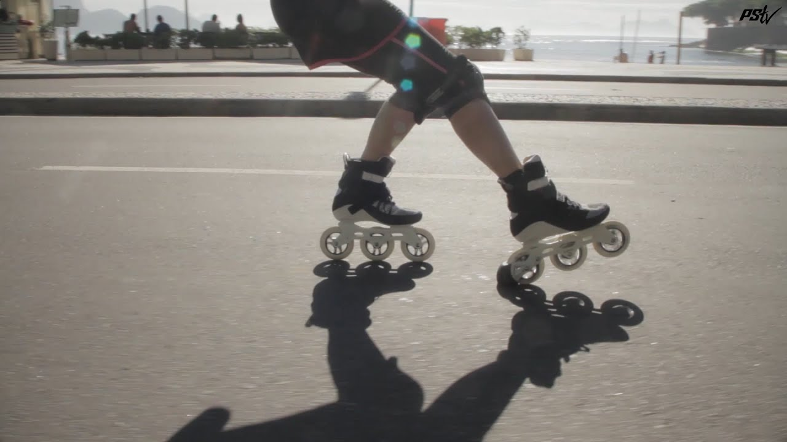

Welcome to my personal page
My name is Luis Mora
I am driven by sports, I love to skate everyday and have been doing it
for the past two years.

Here is some of my interests:
- Reading
Since I started College I had time to spare, I picked up a book from
my shelf and got engaged with reading since then.
- Stream
I love playing Video Games when I am free and the best way to meet
nice people is through streaming and interacting with them. Its a fun
experience.
- Skate
This brings a good physical state for my body and it gives a sense
of freedom, thats why I enjoy it.
- Sports
When I was small, all my friends where enrolled into soccer. So I
picked up that skill from them.
About Me
I am a full time student at Medgar Evers College, my major is Computer
Science and havent decide my branch yet. So far my journey have been fun
beacuse I got to meet wonderful people on the way. The way I live life
is by throwing myself into it, I tend to not make plans and take
everything that comes in the way. Through the procces, I have learned
how to become adaptable and aware of what I do.